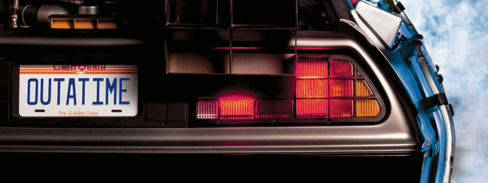

Anatomía de una máquina del tiempo
El DMC DeLorean es quizás el coche más famoso del cine. Su elección se debió a sus puertas de ala de gaviota, que le daban un aspecto de 'nave espacial' para la gente de 1955. Aquí detallamos sus componentes esenciales:
Condensador de Flujo:
El núcleo del viaje temporal. Según el Doc, es 'lo que hace que el viaje en el tiempo sea posible'. Debe recibir una carga de 1.21 gigavatios.Circuitos del tiempo:
La interfaz de control donde se introducen tres fechas: el destino, la fecha actual y la última fecha de partida. Su diseño de displays digitales es un ícono del diseño industrial cinematográfico.Cámara de Plutonio:
En la primera película, la energía se obtenía mediante pastillas de plutonio robadas. Tras su viaje al futuro, fue reemplazada por el sistema 'Mr. Fusion'.Mr. Fusion:
Un reactor de energía doméstico que convierte basura (restos de comida, latas) en la energía necesaria para el condensador de flujo, eliminando la dependencia del plutonio.Hover Conversion:
Añadida en 2015, esta mejora permite que las ruedas del coche se plieguen horizontalmente, otorgándole capacidades de vuelo completo.
